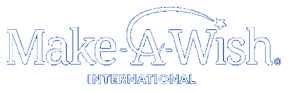

You're the kind of person who could give Sammy hope. See what your gift could do:

Read a story below. Stay a while. You might find one that stays with you.
You're giving to Sammy's story. Every detail below carries forward from your conversation with AVA.
You're giving to Sammy's story. Every detail below carries forward from your conversation with AVA.
A placeholder external resource page — represents a hospital site a family/nurse might browse.
Families and care teams navigating a new diagnosis often ask about additional support programs available to their child.
Learn about wish referrals for eligible children →If a child in your care might qualify, we can help you find out — in a few minutes, in plain language.
Getting started takes about 5 minutes. We'll ask a few short questions — no long forms.
Referral submitted — here's what to expect.